DESIGN × CODE × AI
- 01Human direction
- 02AI collaboration
- 03Implementation
지역 액티비티·장소·코스·클래스·행사와 사용자 커뮤니티를 하나의 서비스 안에서 탐색할 수 있도록 설계한 반응형 웹 프로젝트.
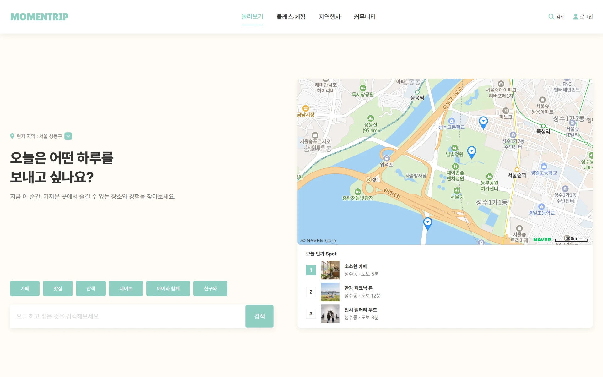
지역별 장소, 클래스, 행사와 사용자 커뮤니티를 하나의 경험으로 연결하는 반응형 웹 서비스를 설계하고 구현한다.
BRIEF UNDERSTOOD — DRAFTING PROJECT DIRECTION
지역의 장소, 클래스, 행사와 커뮤니티 정보가 여러 서비스와 채널에 흩어져 있어, 사용자는 탐색과 이동을 반복해야 했다.
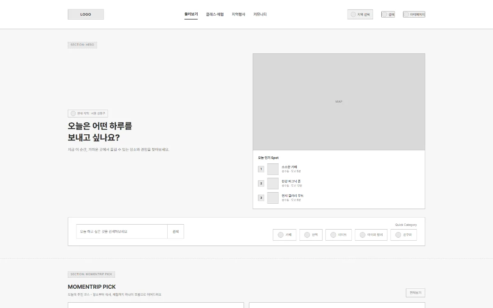
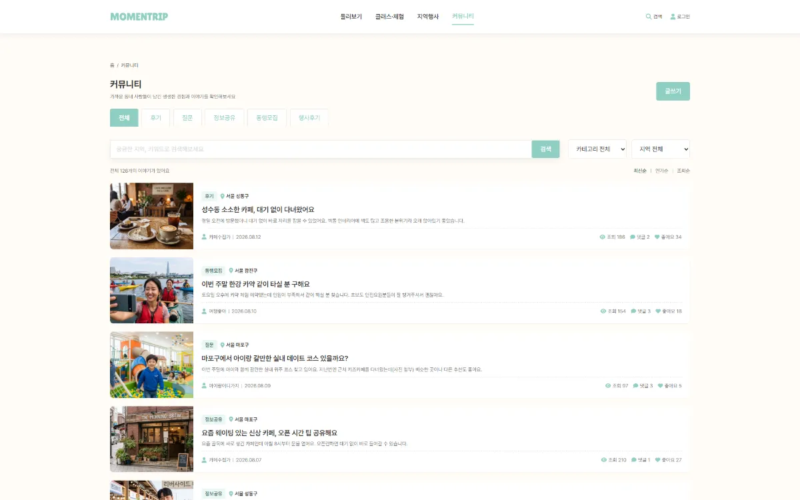
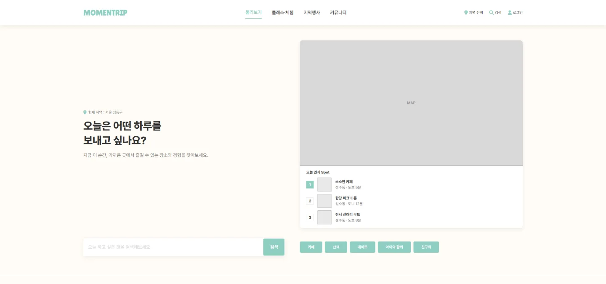
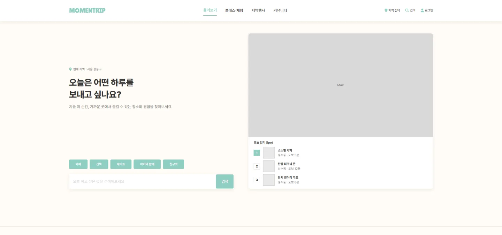
- 01UI 가독성 — 헤드라인 → 카테고리 → 검색을 한 열에 두어 읽는 순서를 하나로 정리
- 02사용자 경험 — 지도 열 아래 떨어져 있던 카테고리를 질문 바로 아래로 옮겨 탐색 시작 동작을 한곳에 모음
- 03ACCESSIBILITY — 08.05 별도 개선(Hero 변경과 무관): 채움 버튼 글자 대비 1.77:1 → 7.15:1, 메뉴 활성 상태 1.77:1 → 5.52:1
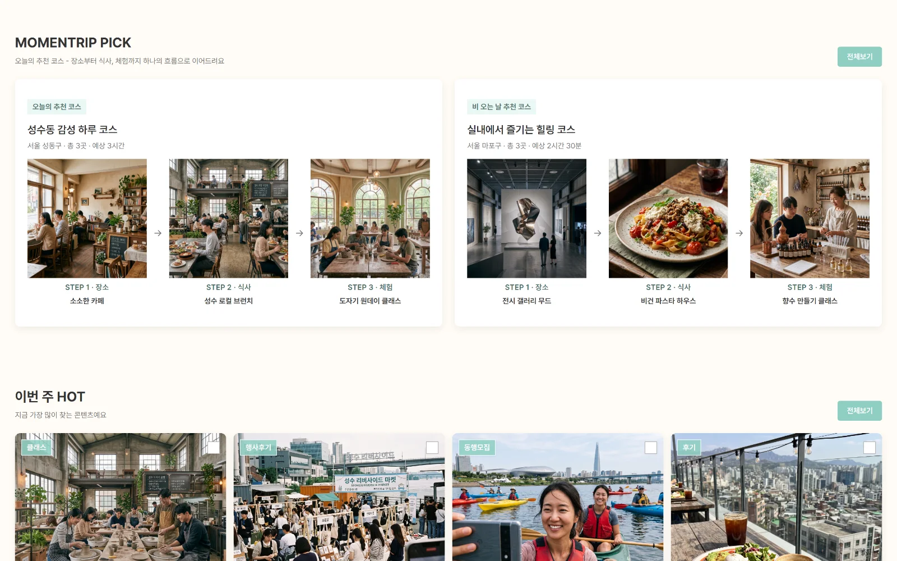
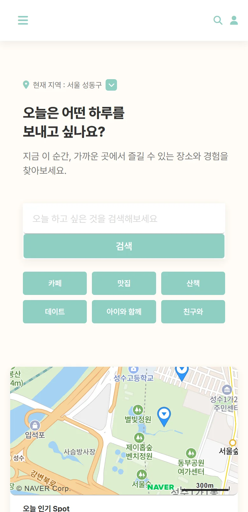
MIVY
일상의 순간을 텍스트와 사진으로 기록하고, 언제든 다시 꺼내볼 수 있도록 만든 개인 기록형 메모 앱.
복잡한 기능보다, 필요한 순간 빠르게 기록하고 사진과 함께 다시 찾아볼 수 있는 개인 메모 경험을 목표로 했다. 서버 없이 브라우저 안에서 동작하며, 모바일 화면을 기준으로 설계했다.
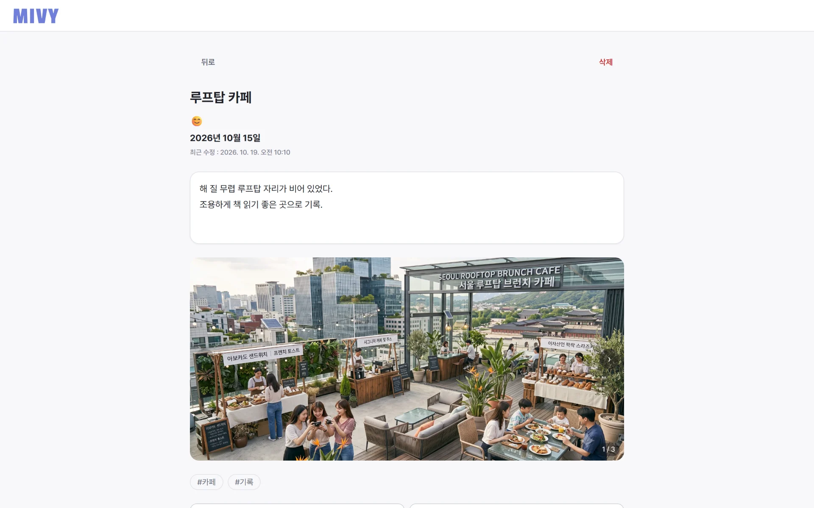
-
01 RECORD 메모 날짜는 캘린더 팝업에서 고르고, 감정은 최대 3개까지, 태그는 Enter로 추가한다.
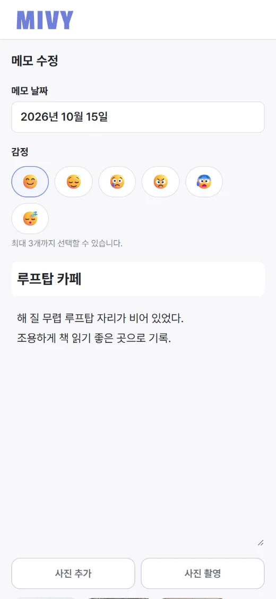
-
02 PHOTO 메모당 최대 10장. 앨범 선택과 카메라 촬영 버튼을 나누고, 썸네일로 미리 보며 한 장씩 삭제한다.
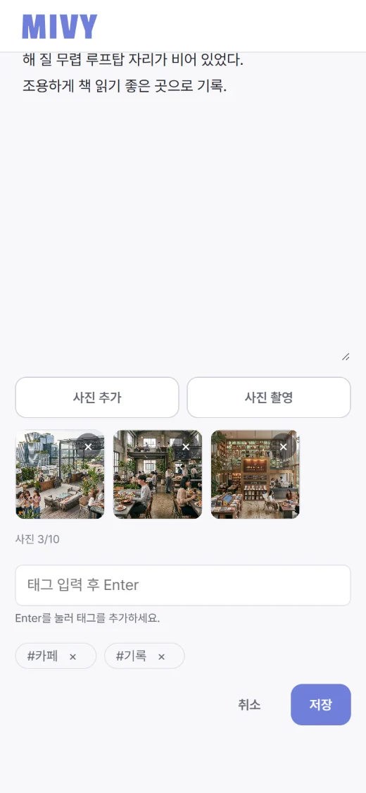
-
03 VIEWER 상세 화면 갤러리에서 사진을 누르면 라이트박스로 확대. 위치 카운터, 이전 / 다음 버튼, 스와이프, 방향키와 ESC를 지원한다.
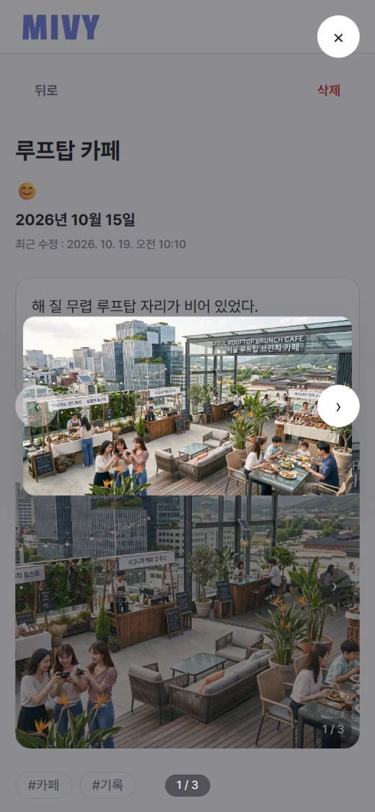
-
04 CALENDAR 메모가 있는 날짜에 점을 표시하고, 날짜를 누르면 그날 기록한 메모 목록을 보여준다.
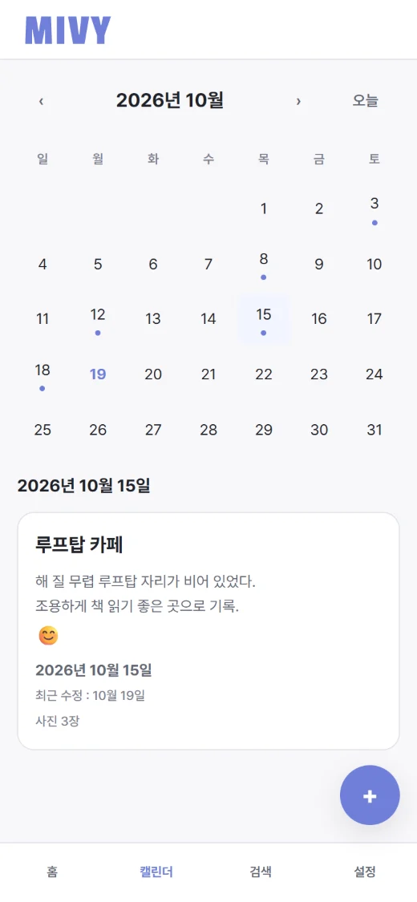
프레임워크와 외부 라이브러리 없이 HTML / CSS / Vanilla JavaScript ES Module로 화면, 상태, 저장소 계층을 나눠 구현했다.
→ 1920×1047 JPEG 0.47MB
기록 + 사진 유지
→ 홈으로 복귀
레이아웃 확인
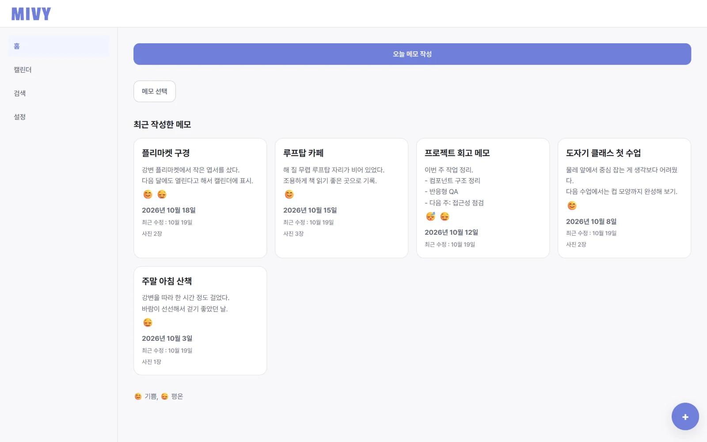
HAM SEUNG HEE
8 YEARS OF DESIGN.
NOW DESIGNING AND BUILDING.
상세페이지·배너·홈페이지부터 책자·리플렛까지, 약 8년간 디자인 실무에서 시각적 완성도와 사용자 관점을 다듬어 왔습니다. 지금은 직접 설계한 화면을 HTML·CSS·JavaScript로 구현하며, 디자인 의도가 코드에서도 그대로 유지되도록 디자인과 구현 사이의 간극을 줄이는 방식으로 작업합니다.
- 웹디자인 실무 약 8년
- 상세페이지 · 배너 · 홈페이지 디자인
- 책자 · 리플렛 등 인쇄 디자인
- After Effects · Premiere Pro 영상 작업
- 2026 웹 퍼블리셔 / UIUX 교육과정 수료
- 교육과정 성적최우수상 · 출석최우수상 수상
- DESIGNFigma · Adobe Photoshop · Adobe Illustrator
- FRONT-ENDHTML5 / CSS3 · Responsive Web Design · Flexbox / CSS Grid · JavaScript
- MOTIONAfter Effects · Premiere Pro
- WORKFLOWGit / GitHub · VS Code · AI-assisted Workflow
-
DESIGN
사용자 흐름과 화면 구조를 먼저 정리하고, 실무에서 다뤄 온 타이포그래피와 레이아웃 기준으로 시각적 완성도를 맞춥니다.
-
BUILD
설계한 화면을 반응형 HTML·CSS와 JavaScript로 직접 구현합니다. MOMENTRIP에서는 여행 서비스의 반응형 퍼블리싱과 인터랙션을, MIVY에서는 LocalStorage·IndexedDB 기반의 메모와 이미지 첨부 기능을 만들었습니다.
-
REFINE
AI를 작업 도구로 활용하되, 결과물은 브라우저에서 직접 확인하고 검토하며 고쳐 나갑니다.
LET'S WORK
TOGETHER
디자인부터 구현까지, 함께 만들 프로젝트에 대해 이야기 나누고 싶습니다.